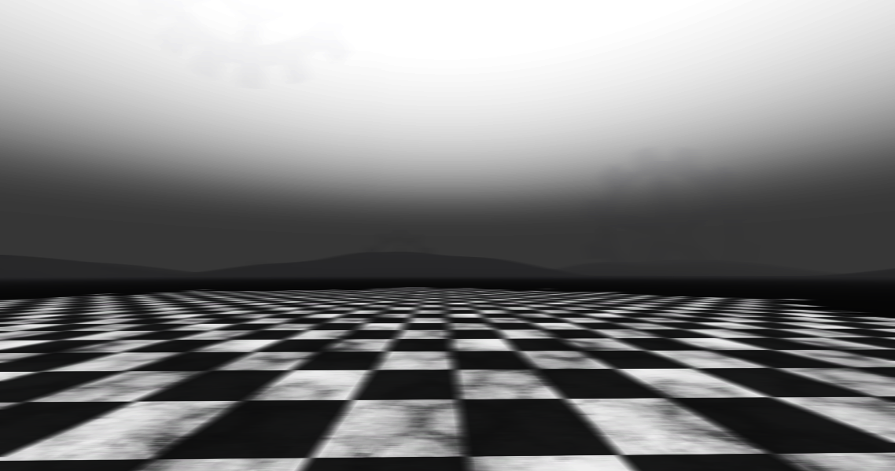
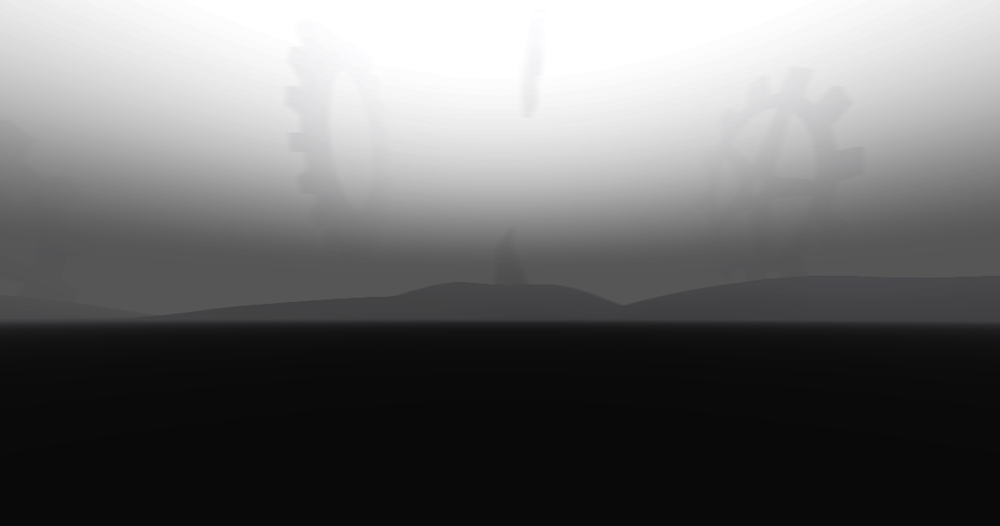
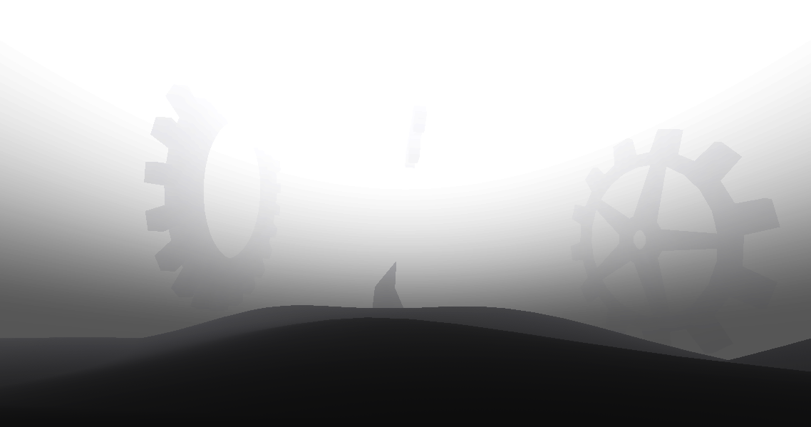

Quando despertei de um sono tão profundo que mal parecia ter fim, percebi que meu corpo despencava no que só posso descrever como um vazio absoluto. Num primeiro momento, a sensação era a de estar flutuando pelo espaço sideral, mas rapidamente ficou claro que não se tratava do universo que conheço.
Era algo ainda mais abstrato.
Um espaço feito de puro nada — e, paradoxalmente, esse “nada” tinha presença. Era como cair dentro do silêncio.
Eu não fazia ideia de onde estava ou do que aquele lugar representava. Mas havia uma certeza irrefutável: eu estava sonhando. Estava, ao que tudo indicava, dentro de uma realidade onírica, gerada — ou talvez curada — pela minha própria mente, e essa realidade seria a minha saída. Bom, pelo menos era o que deveria ser, de acordo com o papel que li.
Não posso garantir que era o "lugar certo" a se cair. Talvez o conteúdo do sonho varie de pessoa para pessoa, ou até mesmo de tentativa para tentativa. Mas fosse escolha da minha mente, ou do próprio espaço, ali estava eu — sem opção de retorno, sem manual de instruções.
Bom, de qualquer forma, agora eu tenho que me resolver nesse lugar.
Enquanto eu caía sem rumo, eu pude perceber notáveis diferenças no ambiente enquanto eu caía. Passei por estruturas que lembravam engrenagens — todas de um branco puro, quase ofuscante — girando lentamente como se o tempo ali estivesse adormecido também. Era um movimento ritmado, mecânico, mas não havia urgência, nem objetivo. Apenas existência.
Entre elas, vi esferas igualmente brancas, porém deformadas — como se estivessem em processo de derretimento, escorrendo para dentro de si mesmas. Algumas flutuavam, outras pareciam congeladas no tempo.
Curiosamente, cada objeto carregava um som próprio. As engrenagens emitiam rangidos baixos, envelhecidos, como se fossem partes esquecidas de uma máquina que um dia teve propósito. Já as esferas... bem, elas murmuravam. Sons abafados, indecifráveis, que mais pareciam ecos de pensamentos nunca verbalizados, tornando esses sons tão misteriosos quanto sua natureza.
E então, senti meu corpo se chocar contra o chão do local.
Eu não senti dor, muito pelo contrário. Eu não senti absolutamente nada. Foi como se o chão tivesse me acolhido, em vez de me deter.
Me levantei com cautela, meus olhos vasculhando ao redor em busca de algum ponto de referência — qualquer coisa que me ajudasse a entender onde eu tinha ido parar agora.
— Ufa, até que enfim! Sem mais coisa invertida. — Eu disse com um tom aliviado, pois percebi esse pequeno detalhe que, apesar de bobo, para mim foi como uma conquista.
A Paisagem Mental.
Analisando mais atentamente, pude notar que esse lugar possuía uma estética tão minimalista quanto surrealista. O piso desse lugar era composto por blocos preto e branco em padrão xadrez, que se estendem até o horizonte.
O céu possuía um degradê de tons de cinza escuro até branco no topo, e o clima era nebuloso, com uma névoa que cobria o horizonte. Também identifiquei sombras de formas distantes, talvez montanhas, colinas ou, quem sabe, estruturas indefinidas.
Eu comecei a andar cauteloscamente pelo local, tomada por uma curiosidade que também possuía o medo em suas costas. Os sons dos meus passos ecoavam pelo local como um todo, o que fez me definir que, seja lá qual fosse esse lugar, estava completamente carente de vida, seja ela qual fosse.
Ao alcançar o fim do extenso piso quadriculado, fui surpreendida por uma mudança abrupta na paisagem: um chão completamente negro se estendia à minha frente, sem textura, sem padrão, sem qualquer sinal de profundidade visual. Num primeiro instante, tudo em mim dizia que aquilo era um abismo — o tipo de vazio que, ao ser tocado, te engole direto pra morte.
 A névoa é avassaladora.
Mas, contrariando o instinto, resolvi testar. Estendi o pé com cuidado, como quem sonda a água antes de mergulhar. Para minha surpresa, o solo não cedeu. Havia firmeza ali. Era, de fato, um chão — apenas envolto por uma escuridão tão opaca e homogênea que chegava a enganar muito bem.
No fim, era só uma superfície que, em contraste com o padrão meticulosamente organizado do piso de xadrez anterior, parecia incompleta.
Continuei caminhando, sem rumo definido, guiada apenas pela linha reta e pela intuição. A névoa que se erguia ao redor escondia formas sutis, mas logo fui capaz de discernir enormes engrenagens flutuando no ar. Assemelhavam-se àquelas que eu havia encontrado da primeira vez e, assim como essas, moviam-se tão lentamente como elas.
Decidi me aproximar de uma delas, atraída por uma curiosidade que nem eu mesma consegui explicar. E ao alcançá-la, simplesmente fiquei ali, parada, observando. Não havia um plano, tampouco uma razão. Apenas o silêncio... e aquele som metálico ritmado, quase terapêutico.
Seus sons me traziam um conforto bizarro, algo difícil de explicar corretamente. Eu me sentia diante de algo antigo, constante, e ao mesmo tempo vivo.
Foi então que, no reflexo levemente distorcido da engrenagem, percebi a silhueta de uma figura atrás de mim.
Imediatamente, girei o corpo num impulso, impulsionada por uma mistura de susto e desconfiança.
— Q-Quem é você?! — questionei com a voz trêmula, enquanto recuava instintivamente.
A figura não respondeu.
Era humanóide em estrutura, mas sua presença era tudo menos humana. O corpo era completamente negro, como se fosse feito da própria ausência de luz. O que mais chamava atenção, porém, eram seus olhos — dois círculos brancos intensos que destoavam violentamente do resto do corpo.
E deles... escorriam lágrimas. Lentas. Silenciosas.
Sem pronunciar sequer uma palavra, a figura começou a se contorcer de forma violenta, como se estivesse sendo arrancada da própria realidade. Nenhum som escapava de sua boca — se é que ainda possuía uma — e tampouco havia qualquer lógica discernível naquele colapso visual. Não houve anúncio, nem explicação. Só o caos.
Tudo que me restava era assistir, perplexa, aquele espetáculo grotesco.
A cena se arrastou por algo entre cinco e sete minutos — embora o tempo, ali, já não fizesse mais sentido. Cada segundo parecia esticado ao ponto de se tornar insuportável.
Até que, enfim, a distorção cessou.
O que antes era uma figura humanoide mergulhada em sombra agora havia assumido uma nova forma.
Era uma porta. Simples, sólida, imóvel.
Era algum tipo de ritual feito somente pra sua aparição? Sinceramente, eu não sei.
Não sabia para onde me levava, mas sabia que seria o meu passaporte para o desconhecido mais uma vez.
Eu suspirei, e apenas aceitei.
"... Então tá."

Autora/Escritora da Porta:
!nia
Inspirado por "Mindscape"
Retornar